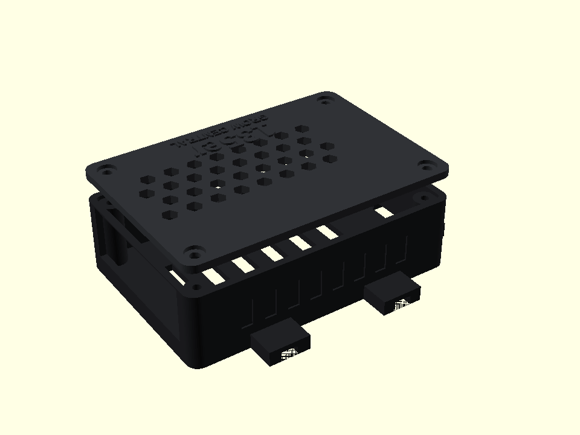
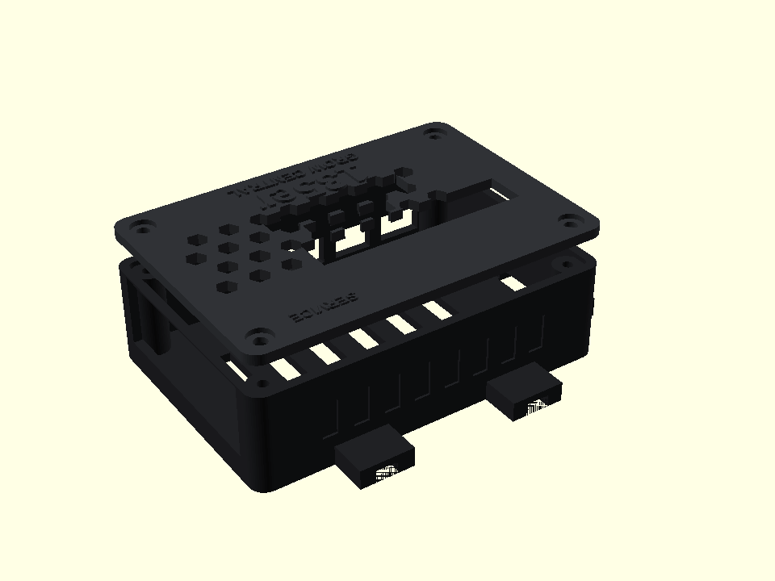

⌁
Local First
Die lokale Steuerung bleibt vor Ort verfügbar. Eine Internet- oder Cloud-Verbindung ist für die Kernidee nicht Voraussetzung.
LOKALE AUTORITÄT
135er-Grow Central führt Geräte, Sensorwerte, Räume und Automationen in einer übersichtlichen Plattform zusammen. Die lokale Raspberry-Pi-Zentrale arbeitet eigenständig – bedient wird sie bequem per Browser, Smartphone oder Tablet.

Grow Central ist als kompakte, dauerhaft laufende Zentrale gedacht. Statt Lampen, Lüfter, Steckdosen, Sensoren und Kameras getrennt zu verwalten, werden die wichtigen Informationen und Abläufe an einem Ort zusammengeführt.
Die lokale Steuerung bleibt vor Ort verfügbar. Eine Internet- oder Cloud-Verbindung ist für die Kernidee nicht Voraussetzung.
LOKALE AUTORITÄTUnterschiedliche Hersteller und Übertragungswege werden in einer gemeinsamen Bedienlogik zusammengeführt.
EINHEITLICHE BEDIENUNGDie Oberfläche ist für Desktop, Tablet und Smartphone ausgelegt. Ein eigener Monitor am Raspberry Pi ist nicht nötig.
RESPONSIVEZeitpläne und Messwerte können später gemeinsam genutzt werden, um wiederkehrende Abläufe zuverlässig zu automatisieren.
REGELN & ZEITPLÄNEDer Fokus liegt auf verständlicher Einrichtung, einem klaren Gesamtstatus und Funktionen, die im Alltag wirklich helfen.
Netzwerk und Zugang werden beim ersten Start Schritt für Schritt eingerichtet.
SETUPGeräte und Messwerte lassen sich strukturiert den jeweiligen Bereichen zuordnen.
ORGANISATIONKlima, Gerätezustände und wichtige Entwicklungen werden übersichtlich dargestellt.
MONITORINGBeleuchtung, Lüftung und weitere Abläufe können zeit- oder zustandsabhängig gesteuert werden.
AUTOMATIONGeeignete USB-Kameras können für lokale Einblicke und die Dokumentation eingebunden werden.
KAMERAEin gemeinsamer Systemstatus hilft dabei, Verbindungen und Komponenten nachvollziehbar zu prüfen.
DIAGNOSEGrow Central wird herstellerübergreifend entwickelt. Der konkrete Funktionsumfang hängt vom jeweiligen Modell, der Firmware und dem Stand der Hardwarevalidierung ab.
Integrationspfade für AVM FRITZ!, TP-Link Tapo, Shelly, Tuya / Smart Life und Home Assistant.
Anbindungen für ausgewählte Geräte und Sensorwege von Mars Hydro und Spider Farmer befinden sich in Entwicklung und Prüfung.
Brücken für Zigbee2MQTT und klar definierte MQTT-Geräte erweitern die Plattform um zusätzliche Sensoren und Aktoren.
Optionale ESP32-Module sind für Substratfeuchte, Temperatur, pH, EC und weitere Messwerte vorgesehen.
Grow Central erkennt die Hardwareklasse und passt den Betrieb an die verfügbaren Ressourcen an. Für neue Installationen ist ein Raspberry Pi 4 oder 5 vorgesehen.
Weiterhin als ressourcenschonende Legacy/Lite-Klasse vorgesehen.
Legacy/LiteEmpfohlene Standardplattform für eine ausgewogene Grow-Central-Installation.
Full SupportZusätzliche Leistungsreserve für größere Installationen und künftige Funktionen.
PERFORMANCEEigenes FDM-Gehäuse für den Raspberry Pi 4 im 135er-Grow-Central-Stil – mit Belüftung, frei zugänglichen Ports und integrierten Kabelbinder-Halterungen zur Befestigung an Grow-Zeltstangen.
OPEN SOURCE HARDWAREDas Gehäuse wurde speziell für Grow Central entwickelt und ist vollständig FDM-druckbar. Die Konstruktion lässt sich per Kabelbinder direkt an Zeltstangen befestigen und bleibt für Wartung und Anschlüsse gut zugänglich.
Vier integrierte Kabelbinder-Aufnahmen ermöglichen eine schnelle und stabile Befestigung an typischen Grow-Zeltstangen.
TOOLLESS MOUNTAusgelegt auf den Raspberry Pi 4 mit passenden M2.5-Abständen, Luftführung und Aussparungen für die wichtigen Anschlüsse. Der Deckel ist wahlweise geschlossen, mit GPIO-Zugang oder als Service-Version mit zusätzlichem Zugriff auf interne Board-Anschlüsse verfügbar.
RPI 4Für PETG oder ASA empfohlen. Das Modell ist mit praxisnahen Toleranzen für normale FDM-Drucker ausgelegt.
PETG / ASADrei Deckelvarianten: geschlossen, GPIO-Fenster oder Service-Deckel mit zusätzlichem Kabel-/Boardzugang für interne Anschlüsse.
GPIO / SERVICEDie Vorschaubilder werden direkt aus den OpenSCAD-Modellen erzeugt und entsprechen den jeweiligen downloadbaren Varianten.

Standarddeckel mit Belüftung und maximalem Schutz der internen Board-Anschlüsse.
Closed STLDeckel mit direktem Zugriff auf den 40-Pin-GPIO-Header für Sensorik und Erweiterungen.
GPIO STL
GPIO plus zusätzlicher Zugriff für interne Board- und Flachbandkabel-Anschlüsse.
Service STLFür einen schnellen Start kannst du die komplette Druckplatte verwenden. Boden und Deckel stehen zusätzlich einzeln zur Verfügung.
Boden und Deckel gemeinsam auf einer Druckplatte.
Printplate STLUnterteil mit Pi-Aufnahmen, Lüftung und Zeltbefestigung.
Bottom STLPassender Deckel im 135er-Grow-Central-Design.
Lid STLKomplette Druckplatte mit offenem 40-Pin-GPIO-Zugang im Deckel.
GPIO STLZusätzlicher Zugriff auf GPIO sowie interne Board- und Flachbandkabel-Anschlüsse.
Service STLParametrische Quelldatei zum Anpassen; ACCESS_MODE = closed, gpio oder service.
SCAD herunterladenFür die 0,4-mm-Düse optimierte Gehäuseprofile mit 0,20-mm-Schichten, zusätzlichen Wänden und erhöhter Bauteilfestigkeit. PETG ist die unkomplizierte Standardwahl; ASA bietet mehr Temperatur- und UV-Reserve.
0,20 mm · 4 Wände · 25 % Gyroid · moderates Tempo · 5 mm Brim.
P2S PETG Profil0,20 mm · 5 Wände · 30 % Gyroid · reduziertes Tempo · 8 mm Brim für Warping-Reserve.
P2S ASA ProfilDie Kamera wird als Belichtungsmesser genutzt. Aus ISO, Belichtungszeit und Blende werden Lux, PPFD und DLI näherungsweise berechnet. Für präzise PAR-Messungen bleibt ein kalibriertes Quantum-Meter die Referenz.
Unsigned IPA für eigene Signierung mit Sideloadly, AltStore oder SideStore. Entwickelt für iOS/iPadOS 16 und neuer.
iOS Sideload ZIP herunterladenZIP entpacken und die enthaltene IPA anschließend mit Sideloadly, AltStore oder SideStore selbst signieren.
Native Kotlin/Jetpack-Compose-App mit Camera2-Messung. Unterstützt Smartphones und Tablets ab Android 8.
Android APK ZIP herunterladenZIP entpacken und die enthaltene APK installieren. Als App-Icon wird das offizielle Grow-Central-Projektlogo verwendet.
Android-Quellcode und das iOS-Xcode-Projekt liegen im öffentlichen Grow-Central-Repository und werden reproduzierbar über GitHub Actions gebaut.
Quellcode auf GitHubGrow Central wird vollständig Open Source entwickelt und auf realer Raspberry-Pi-Hardware getestet. Quellcode, Dokumentation und veröffentlichte Builds sind über das öffentliche Projekt-Repository verfügbar. Teststände bleiben als CANDIDATE gekennzeichnet, bis ihre Funktion auf der jeweiligen Hardware geprüft wurde.
Lokale Zentrale, responsive Oberflächen und Geräteintegration werden gemeinsam weiterentwickelt.
AKTIVEin Build wird erst nach realen Tests auf der jeweiligen Hardwareklasse als validiert eingestuft.
IN PRÜFUNGQuellcode und Dokumentation sind öffentlich verfügbar. Veröffentlichte Images und App-Pakete findest du in den Projekt-Releases; die jeweilige Beschreibung nennt den Test- und Freigabestatus.
OPEN SOURCENein. Grow Central ist für den Betrieb ohne eigenen Desktop ausgelegt und wird über andere Geräte im Netzwerk bedient.
Die Kernidee ist Local First. Eine Cloud kann zusätzliche Fern- und Verwaltungsfunktionen ergänzen, bleibt aber optional.
Noch nicht. Der Funktionsumfang hängt von Modell und Firmware ab. Kritische Schreibfunktionen werden erst nach sicherer Validierung freigegeben.
Quellcode und Dokumentation findest du im öffentlichen Repository. Verfügbare Downloads stehen unter Releases. Beachte den jeweiligen Teststatus; ein CANDIDATE ist noch kein hardwarevalidierter Build.